A rule-and-scenario library, exposed through the Model Context Protocol, that lets a language model place geometry, run solvers, and read back model state directly inside Rhino.
Each is a separate template: its own inputs, its own process, its own result.
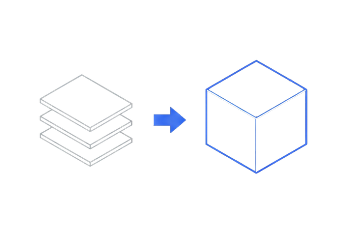
photo / plan / text→3D geometry
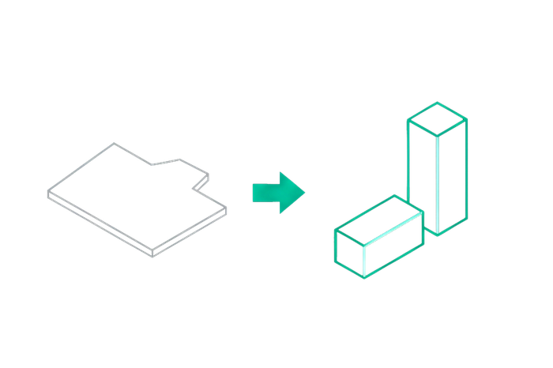
site boundary + brief→zoning + massing
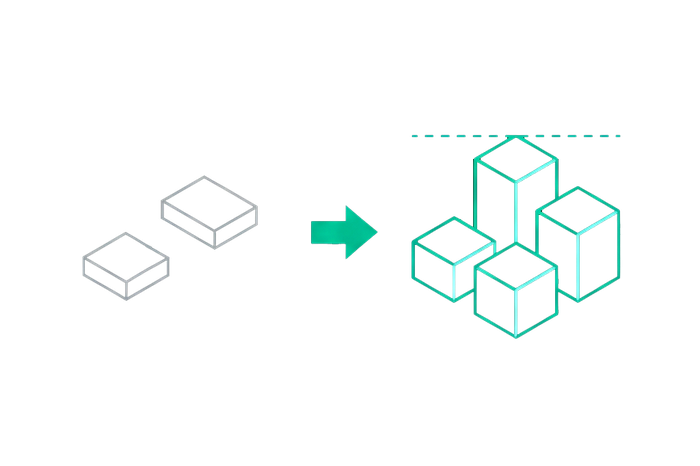
footprints→form + variants
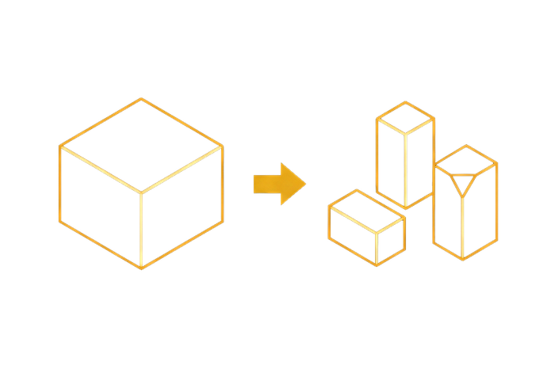
approved massing→2–3 alternatives
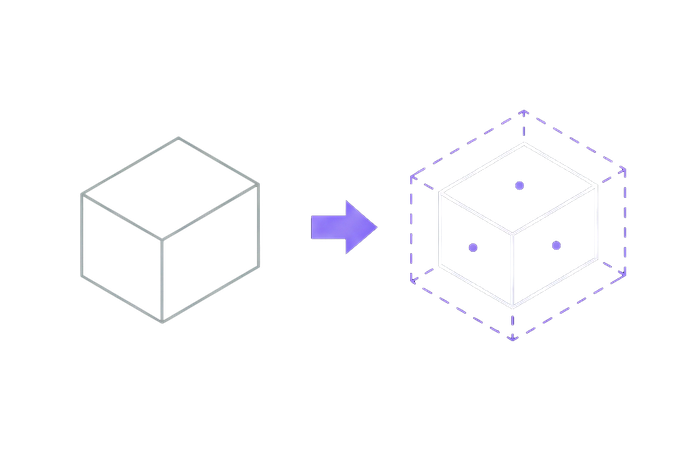
model in Rhino→compliance checklist
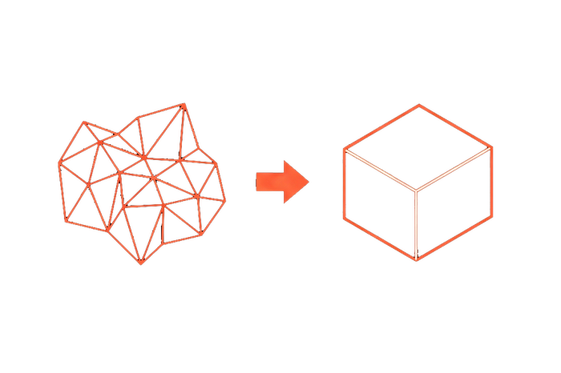
detailed Rhino model→calculation geometry
Driving Rhino from natural language usually means either brittle macro recording or one-off scripts that only work for a single task. There was no general way to let an LLM issue real modeling commands and get real model state back, across more than one kind of design problem.
A rule-and-scenario library exposed over the Model Context Protocol (MCP): the agent reads a repository of scenarios, form-finding patterns, and a documented error library before writing a line, then RhinoMCP runs the resulting Python or C# script live inside the open Rhino file. Six directions of use share that same repository, each its own input, process, and result.
photo / plan / text→3D geometry
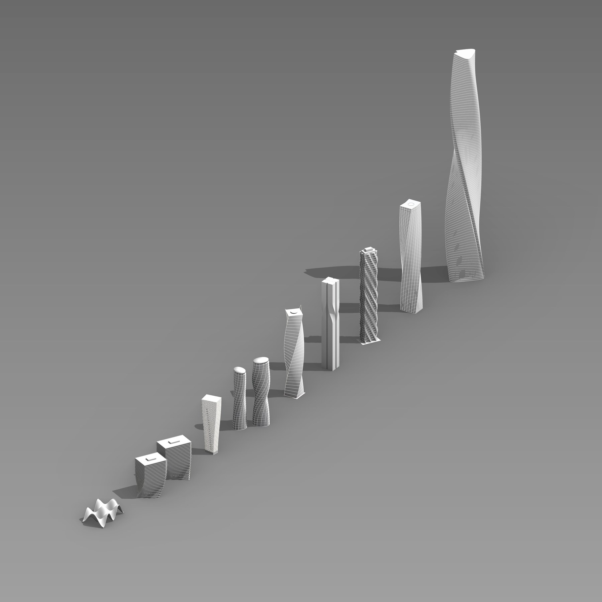
site boundary + brief→zoning + massing
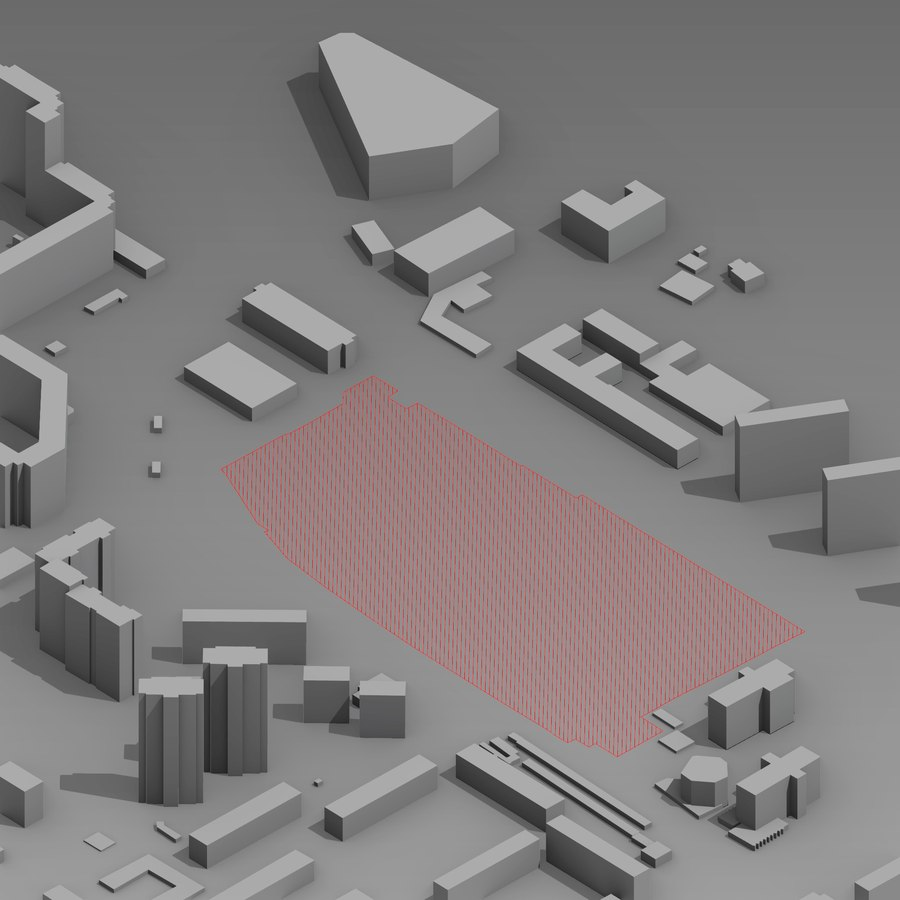
Site data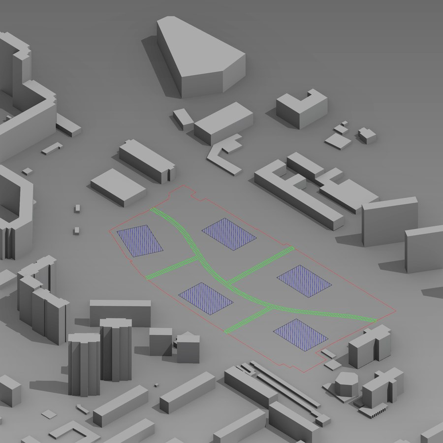
Zoning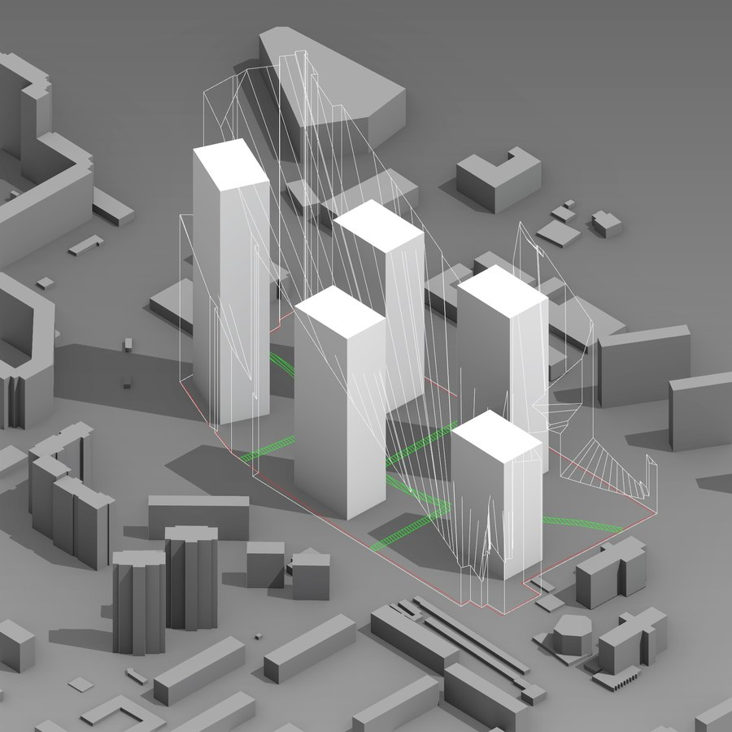
Building envelope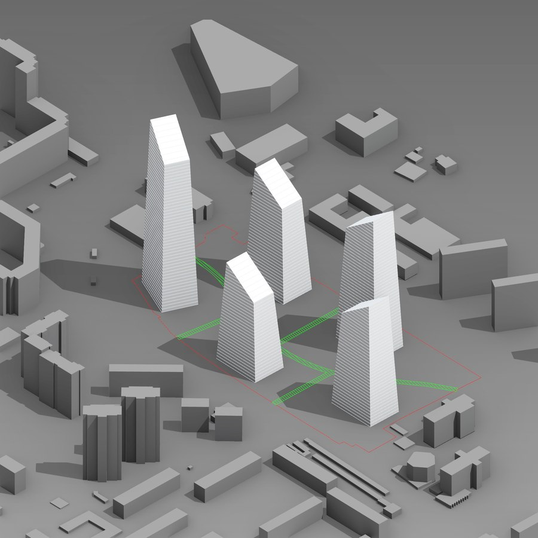
Massingfootprints→form + variants
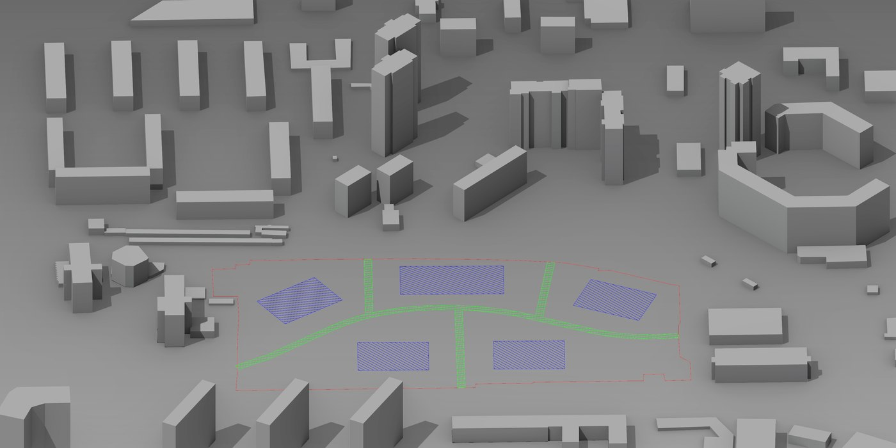
Footprints (input)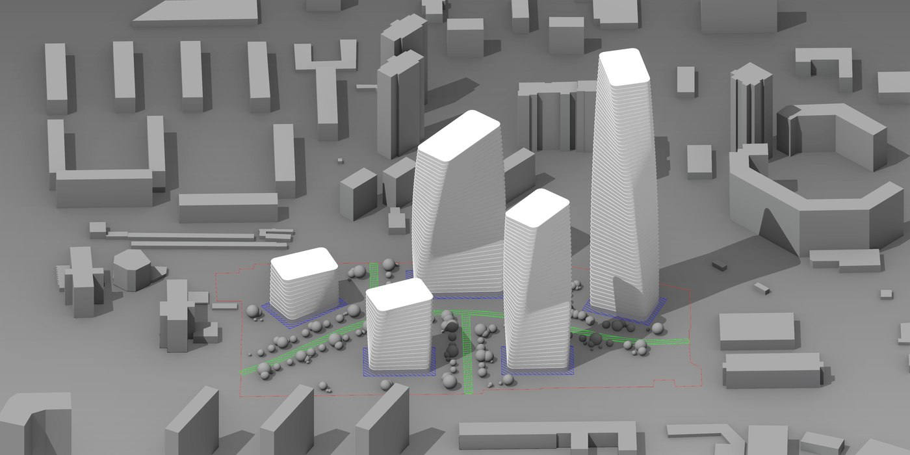
Volumes (output)approved massing→2–3 alternatives
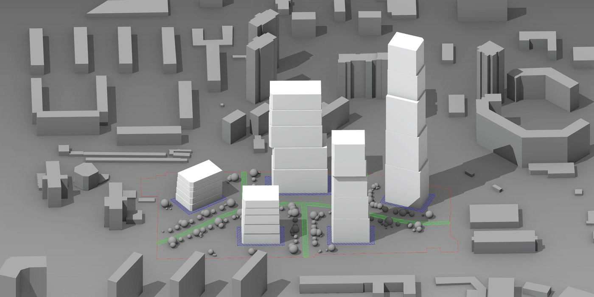
model in Rhino→compliance checklist
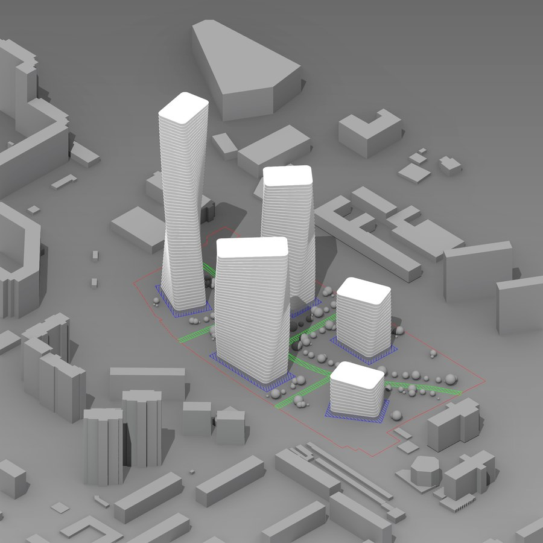
Variant 01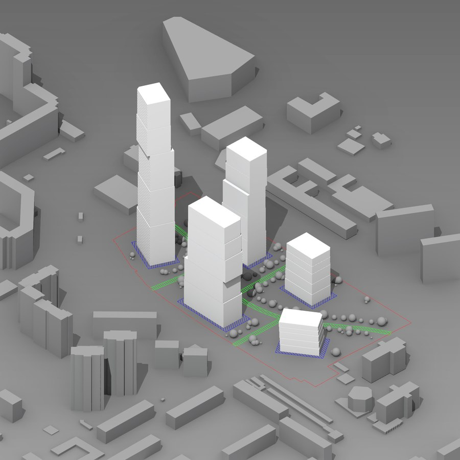
Variant 02detailed Rhino model→calculation geometry
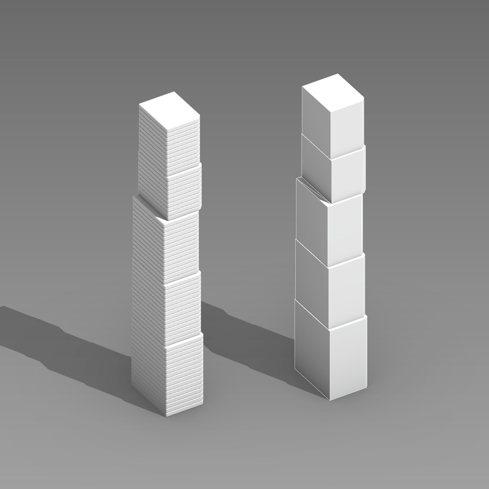
Public on GitHub (ai-geometry-workflows): the MCP server, the RhinoCommon bridge, and the full scenario, pattern, and error library are all in the open, not a private demo.
Scored against a real municipal design-review checklist (ДГП), not an internal guess: a generated massing is checked section by section, silhouette, volumetric uniqueness, street frontage, permeability, so the result cites what the model was actually run against.
12+ real building types worked through end to end, Karlatornet, Aqua Tower, Grove at Grand Bay, and Absolute World among them, backed by an 8-code error library so the agent stops repeating the same architectural mistakes session to session.